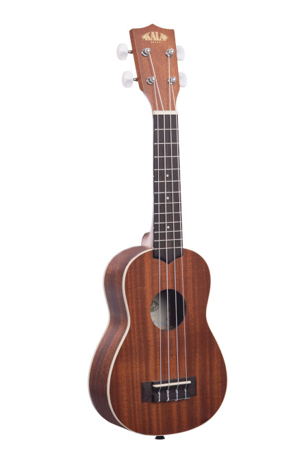
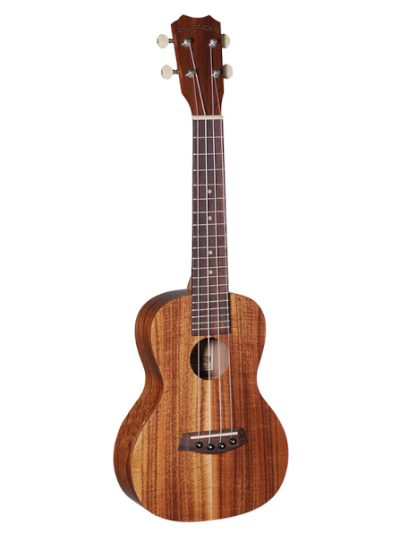
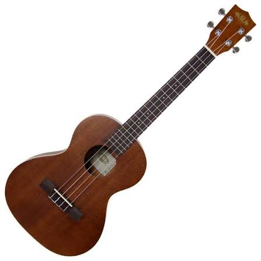
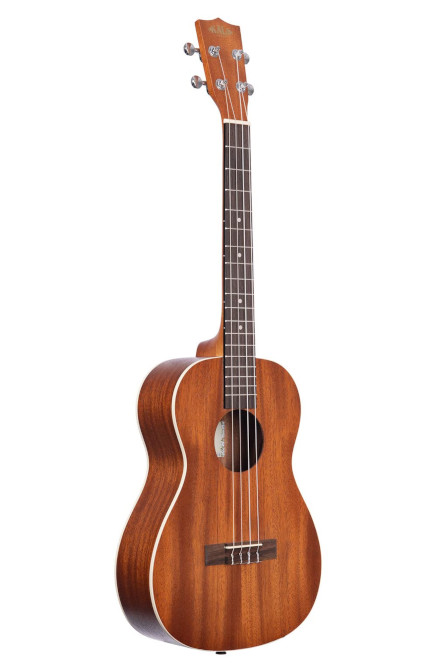

Whether you have never held a ukulele before or you already know a few songs, this Academy is designed to guide you through a clear learning journey.
We start at the very beginning. We will not assume that you can read music, understand rhythm, recognise chord diagrams or even know which way to hold the instrument. Each new idea will be introduced in plain language and supported by practical exercises.
Our teaching promise: Every lesson should feel like a patient ukulele teacher is sitting beside you—never rushing you, never making you feel silly and always explaining why a skill matters.
By the end of Level 0, you will understand:
What a ukulele is and what it can do.
How the Academy is organised.
What you will need to begin learning.
What we expect from you as a learner.
What comes next in your learning journey.
What is a ukulele?
A ukulele is a small, four-stringed musical instrument. It is often associated with a bright, cheerful sound, but it is capable of far more than simple strumming.
Ukuleles can accompany singing, play melodies, create fingerstyle arrangements, support other musicians and perform styles including folk, pop, rock, blues, jazz, classical and Hawaiian music.
The main ukulele sizes

Soprano
The traditional small ukulele size. It has a bright sound and compact fret spacing.
Smallest common size · Traditional ukulele feel

Concert
Slightly larger, with a little more room between frets while retaining a familiar ukulele sound.
Comfortable middle size · More fretboard room

Tenor
Larger again, often chosen by players who want more fretboard room or a fuller sound.
Larger body · Fuller sound and wider spacing

Baritone
The largest common type. It is usually tuned differently and has a sound closer to the upper strings of a guitar.
Largest common size · Usually tuned D–G–B–E
Good to know: You do not need to own every type. One playable ukulele is enough to begin the Academy.
Why people learn ukulele
It is portable and easy to hold.
You can begin playing songs with only a few chords.
It works well for solo playing, singing and group sessions.
It can remain simple or become as musically advanced as you wish.
Most importantly, it is fun.
How the Academy works
The Academy is arranged as a progression. Each level introduces skills that prepare you for the next one.
1
Read
Learn the idea in plain language and understand why it matters.
2
Follow the steps
Work through each technique slowly and carefully.
3
Practise
Use short exercises to build coordination and muscle memory.
4
Check yourself
Use the “Ready to move on?” checklist. It is guidance, not an exam.
5
Continue or repeat
Move forward when comfortable, or revisit the lesson whenever needed.
Some lessons may take ten minutes. Others may take days or weeks. Both are completely normal.
Tip: Accuracy comes before speed. A slow, clean movement teaches your hands more effectively than a fast, untidy one.
What we expect from you
You do not need natural talent, previous musical experience or hours of free time. We ask only for a few simple things:
Practise regularly, even if it is only for 10–15 minutes.
Slow down when something feels difficult.
Repeat exercises until the movement becomes comfortable.
Accept mistakes as a normal and useful part of learning.
Listen carefully to the sound you are making.
Stay curious and enjoy yourself.
Progress comes from consistency, not perfection.
What you should expect from us
Clear explanations without unnecessary jargon.
Step-by-step guidance.
Practical exercises rather than theory alone.
Tips for common difficulties and smoother technique.
A path that grows from absolute beginner to advanced player.
What you will need
🎸
A ukulele
Any normal playable ukulele is enough to begin.
🎛️
A tuner
A clip-on tuner is convenient, although a tuning app can also work.
🪑
A comfortable place
A supportive chair and enough room to hold the instrument freely.
⏱️
A little time
Short, regular practice is more valuable than rare, exhausting sessions.
👂
Your ears
Listening is one of the most important musical skills you will develop.
🙂
Patience
Your hands are learning unfamiliar movements. Give them time.
Not ready yet? That is fine. Level 0 is an introduction. Level 1 will begin with how to hold your ukulele comfortably before we ask you to play anything.
Your first reflection
Take a moment to think about what inspired you to learn the ukulele. It might be a favourite song, a friend, a local club, curiosity, relaxation or simply the joy of trying something new.
Your reflection is stored only in this browser on this device.
Ready to move on?
Your learning journey
Level 0 is the first foundation. Future Academy releases will build the complete path below.
Level 0Welcome to the UkuleleAvailable now
Level 1Holding Your UkuleleAvailable now
Level 2TuningAvailable now
Level 3Your First NotesAvailable now
Level 4Your First ChordsAvailable now
Level 5Changing ChordsAvailable now
Level 6Rhythm and TimingAvailable now
Level 7StrummingAvailable now
Level 8+Songs, fingerpicking, expression, group playing and advanced techniquesPlanned
Before learning chords or strumming patterns, you need a comfortable and reliable way to hold the instrument. Good positioning keeps the ukulele steady, helps both hands move freely and reduces unnecessary tension.
There is no single pose that suits every body. The goal is not to look identical to another player—it is to find a balanced position that lets you breathe, relax and reach the instrument without twisting.
Most important rule: The ukulele should feel supported before either hand begins to play. Your fretting hand should guide the neck, not carry the entire instrument.
By the end of Level 1, you will be able to:
Sit or stand with relaxed, balanced posture.
Rest the ukulele securely against your body.
Position the neck at a comfortable upward angle.
Keep your fretting wrist and thumb in a useful position.
Place your strumming arm without squeezing the instrument.
Recognise and correct common signs of tension.
1. Begin with comfortable posture
Sit toward the front half of a firm chair with both feet supported. Let your shoulders drop naturally and keep your head balanced rather than leaning forward to inspect the fretboard.
A comfortable starting position
Place both feet flat on the floor, or use a footrest if needed.
Sit tall without becoming stiff.
Relax your shoulders and elbows.
Bring the ukulele to you rather than bending your body toward it.
Take a slow breath and check that you are not holding tension.
Suggested imageCorrect seated posture, front or three-quarter viewimages/academy/level1/correct-seated-posture.jpg
Helpful check: If your neck, shoulders or lower back begin aching after only a few minutes, pause and reset your position. Discomfort is useful information, not something to push through.
2. Support the ukulele against your body
For a typical right-handed playing position, rest the back of the ukulele lightly against your chest or upper stomach. Your right forearm rests over the lower edge of the body and provides gentle inward support.
Place the body: Let the ukulele body sit against the right side of your torso, not directly beneath your chin.
Angle the neck: Raise the headstock slightly. A modest upward angle usually keeps the wrist more comfortable than holding the neck completely horizontal.
Rest the forearm: Lay your right forearm over the upper edge of the instrument near where the body narrows.
Use gentle pressure: Draw the instrument lightly toward your body. Do not clamp it tightly.
Test the support: Briefly loosen your fretting hand. The ukulele should remain reasonably stable instead of immediately falling away.
Suggested imageUkulele resting against the torsoimages/academy/level1/body-support.jpg
Avoid: squeezing the instrument between your forearm and body. Too much pressure creates tension and can make strumming feel stiff.
3. Position your fretting hand
Your fretting hand will eventually press strings and form chords. For now, practise supporting and guiding the neck without gripping it tightly.
Thumb position
Rest the pad of your thumb gently on the back of the neck. Keep it roughly opposite your first or second finger. The thumb may move as you play; it does not need to remain frozen in one exact spot.
Finger and wrist position
Curve your fingers naturally, as though loosely holding a small ball.
Keep space between your palm and the underside of the neck.
Let the wrist remain mostly straight and comfortable.
Avoid collapsing the wrist sharply inward.
Use only enough thumb pressure to balance the fingers.
Suggested imageThumb on the back of the neckimages/academy/level1/thumb-position.jpg
Suggested imageCurved fingers with space under the neckimages/academy/level1/fretting-hand-position.jpg
Teacher's tip: Imagine the neck is delicate. Guide it securely, but do not crush it. Excess thumb pressure often causes hand fatigue and makes chord changes slower.
4. Position your strumming arm and hand
Your forearm supports the instrument, but your wrist and hand must still be free to move. Let your right hand hang loosely over the strings.
Rest your forearm on the body of the ukulele.
Bring your hand toward the strings near the end of the fretboard or just above the sound hole.
Keep the wrist soft rather than locked.
Let the fingers remain relaxed.
Make a few silent up-and-down movements without touching the strings.
Do not worry about producing a proper strum yet. Level 7 will explain strumming with the index finger, thumb and pick in detail. At this stage, we are only establishing a relaxed movement path.
Suggested imageRelaxed strumming arm and hand positionimages/academy/level1/strumming-arm-position.jpg
5. Playing while standing
A strap is not compulsory, but many players find it extremely useful. It holds the instrument at a consistent height and reduces the amount of support required from the arms.
Without a strap
Use your strumming forearm and torso to support the body, while the fretting hand guides the neck. This works well for simple playing but may feel less stable during difficult chord changes.
With a strap
Adjust the strap so the ukulele sits at approximately the same height it did while seated. Avoid hanging it very low, because that forces the wrist into an awkward angle.
Optional imageStanding position without strapimages/academy/level1/standing-without-strap.jpg
Optional imageStanding position with strapimages/academy/level1/standing-with-strap.jpg
Left-handed players: Reverse the hand references throughout this lesson. The principles of balance, relaxation and support remain exactly the same.
Practice exercise: the one-minute reset
Repeat this short exercise several times over the next few days. You are teaching your body what a relaxed playing position feels like.
1
Settle
Sit comfortably with both feet supported and shoulders relaxed.
2
Place
Bring the ukulele to your body and angle the neck slightly upward.
3
Support
Rest your strumming forearm gently over the instrument.
4
Guide
Place the fretting thumb behind the neck and curve the fingers loosely.
5
Release tension
Take a breath, soften your shoulders, jaw, hands and wrists.
6
Reset
Put the ukulele down, then repeat the whole setup without rushing.
Try this stability check
While keeping the ukulele supported by your body and strumming arm, briefly open the fingers of your fretting hand. Do this carefully. The instrument does not need to remain perfectly motionless, but it should not depend entirely on your left hand for support.
Common mistakes
Hunching forwardBring the instrument closer instead of lowering your head toward it.Holding the neck flatRaise the headstock slightly to give the wrist more room.Gripping with the thumbUse gentle contact rather than squeezing.Clamping the bodyUse enough forearm pressure for stability, but keep the arm mobile.Locked wristLet the strumming hand hang and move loosely.Ignoring discomfortStop, reset and adjust before continuing.
Ready to move on?
Take a moment to notice…
Which part of holding the ukulele feels least natural right now—your posture, your fretting hand, or your strumming arm? Simply noticing it gives you something useful to check during future practice.
Before you play a chord or melody, your ukulele needs to be in tune. An out-of-tune instrument can make correct playing sound wrong, while a well-tuned ukulele makes practice much more enjoyable.
Tuning may feel unfamiliar at first, but it quickly becomes a simple routine. With a clip-on tuner, most players can check all four strings in less than a minute.
Academy standard: We use standard High-G tuning—G, C, E and A—throughout the beginner lessons unless a lesson clearly says otherwise.
By the end of Level 2, you will be able to:
Name the four open strings in order.
Understand the difference between High-G and Low-G tuning.
Use a clip-on tuner or tuning app.
Recognise whether a string is too low or too high.
Adjust each tuning peg safely in small movements.
Build tuning into your normal practice routine.
1. Meet the open strings: G–C–E–A
When you play a string without pressing any fret, it is called an open string. Standard ukulele tuning gives the four open strings these notes:
4th stringGTop string when playing3rd stringCUsually the lowest-sounding note2nd stringEMiddle-high note1st stringABottom string when playing
Remember the order as: G – C – E – A.
Helpful habit: Say each note aloud while tuning. This helps you connect the string position, its number and its note name.
Suggested imageUkulele strings labelled G, C, E and A from the player's viewpointimages/academy/level2/gcea-strings-labelled.jpg
2. High-G and Low-G tuning
Most soprano, concert and tenor ukuleles use High-G tuning. The top G string sounds higher than the C string below it. This non-linear arrangement helps create the familiar bright ukulele sound.
Some players use a thicker Low-G string instead. Low-G extends the instrument's lower range and is popular for fingerstyle and melody arrangements.
For this Academy
Begin with High-G unless your ukulele already has Low-G.
Both use the note names G–C–E–A.
The difference is the octave of the G string.
You do not need to change strings to continue learning.
Suggested imageHigh-G and Low-G strings shown side by sideimages/academy/level2/high-g-low-g-comparison.jpg
Did you know? The C string is normally the lowest-sounding string on a High-G ukulele, even though it is not physically the top string.
3. Ways to tune your ukulele
⭐ Recommended
Clip-on tuner
Clips to the headstock and detects vibration. It works well in noisy rooms and is usually the easiest option for beginners.
Convenient
Phone or tablet app
Uses the device microphone. It can work very well in a quiet room, but nearby sounds may confuse it.
Later skill
Tuning by ear
Uses a reference note or another instrument. Ear training is valuable, but an electronic tuner is more reliable while learning.
Suggested imageClip-on tuner attached to the headstockimages/academy/level2/clip-on-tuner.jpg
Suggested imageClose view of tuner showing a centred noteimages/academy/level2/tuner-in-tune-display.jpg
4. Tune each string step by step
Attach or open your tuner: Clip it to the headstock or open your tuning app and select ukulele or chromatic mode.
Choose one string: Begin with the top G string. Pluck only that string gently and let it ring.
Read the note: Confirm that the tuner is identifying the correct letter. If you are tuning G, the display should show G.
Check low or high: A note below the target is flat; a note above the target is sharp.
Turn the correct peg slightly: Tightening raises the pitch; loosening lowers it. Make only a tiny adjustment.
Pluck again: The tuner needs a fresh, clear sound after each adjustment.
Centre the reading: Stop when the tuner shows the correct note centred or marked in tune.
Continue through C, E and A: Work one string at a time, then check all four once more.
Important: Never keep tightening a string when the tuner shows the wrong note letter and you are unsure where you are. Stop, loosen slightly and seek help. Excessive tightening can break a string.
Which way do I turn the peg? Peg direction can vary because tuners are mounted differently. Watch the tuner instead of memorising clockwise or anticlockwise: tighten to make the note higher, loosen to make it lower.
Suggested imageHeadstock with each tuning peg connected to its stringimages/academy/level2/tuning-pegs-labelled.jpg
5. New strings and tuning stability
New ukulele strings stretch. During the first several practice sessions, they may fall flat repeatedly—even only minutes after you tuned them. This is normal and does not mean the ukulele or tuner is faulty.
Tune before every practice session.
Expect to retune several times when strings are new.
Play normally and allow the strings to settle gradually.
Do not pull or stretch them aggressively.
Changes in temperature can also affect tuning.
A musician's routine: Pick up the ukulele, tune G–C–E–A, then begin playing. Even experienced musicians check their tuning regularly.
6. Practice exercise: the tuning routine
Complete this short routine on several different days. The goal is confidence and accuracy—not speed.
Round 1Say “G”, pluck the G string and tune it.Round 2Say “C”, pluck the C string and tune it.Round 3Say “E”, pluck the E string and tune it.Round 4Say “A”, pluck the A string and tune it.Final checkRepeat G–C–E–A once more because adjusting one string can slightly affect the others.
Common tuning mistakes
Turning the wrong pegTrace the string visually from the body to its tuning peg before adjusting.Plucking several stringsMute the others and pluck one clear string at a time.Making large turnsUse tiny movements and check the tuner after each one.Watching only the needleFirst confirm the tuner is displaying the correct note letter.Tuning once and assuming it will stayCheck before every practice session, especially with new strings.Plucking too hardA gentle, even pluck gives the tuner a steadier reading.
Ready to move on?
Take a moment to notice…
Which part of tuning needs the most attention right now—remembering the string names, choosing the correct peg, or making small adjustments? Repeat that one part slowly during your next practice.
You can now hold your ukulele comfortably and tune it to G–C–E–A. In this level, you will discover how the fretboard changes pitch, learn the basics of ukulele TAB and play your first short melody.
By the end of Level 3, you will be able to:
Identify the nut, fretboard, fret wires and numbered frets.
Explain what an open string is.
Press a string so it rings clearly.
Read a simple line of ukulele TAB.
Play a short five-note melody in steady time.
Your first musical milestone: By the end of this lesson, the numbers on a TAB will no longer look mysterious—they will be instructions your fingers can follow.
1. Meet the fretboard
The long, narrow surface under the strings is the fretboard. Thin metal strips called fret wires divide it into numbered spaces called frets.
Open12345
Open string: Play the string without pressing it. In TAB, this is shown as 0.
First fret: The first space immediately after the nut.
Second fret: The next space toward the body, and so on.
Fret markers: Dots on many ukuleles help you find positions quickly.
Important: Count the spaces, not the metal wires. “Third fret” means the third space after the nut.
Suggested imageUkulele fretboard labelled with nut, fret wires, frets and marker dotsimages/academy/level3/fretboard-labelled.jpg
2. Pressing a clear note
When you press a string against a fret, you shorten the part of the string that vibrates. A shorter vibrating string produces a higher note.
Choose the A string—the string nearest the floor when holding the ukulele normally.
Place the tip of your finger in the third fret space.
Position it just behind the fret wire on the body side of the space, not directly on top of the wire.
Keep your fingertip rounded so it does not touch neighbouring strings.
Press only firmly enough to make the note ring clearly, then pluck the string.
Suggested imageCorrect fingertip position just behind the fretimages/academy/level3/pressing-behind-fret.jpg
Suggested imageCommon mistake: finger directly on the fret wireimages/academy/level3/pressing-on-fret.jpg
Buzzing note? Move closer to the fret wire, use the fingertip and add only a little more pressure. Squeezing much harder is rarely the best solution.
3. Reading ukulele TAB
TAB is a simple picture of the four strings. The top line represents the A string and the bottom line represents the G string.
A |----------------
E |----------------
C |----------------
G |----------------
A number tells you which fret to press on that string. A zero means play the string open.
A |---3------------
E |----------------
C |----------------
G |----------------
This instruction means: press the third fret of the A string, then pluck that string once.
Read TAB from left to right, just as you read a sentence. Notes appearing farther to the right are played later.
4. Your first melody
This small exercise uses only the A string. Play each number once, slowly and evenly.
A |--0--2--3--2--0--|
E |-----------------|
C |-----------------|
G |-----------------|
0Play the open A string.2Press the second fret of the A string.3Press the third fret of the A string.2Return to the second fret.0Lift your finger and play the open A string.
Congratulations: Once you can play those five notes in order, you have read TAB and performed your first ukulele melody.
5. Practice exercise: steady first notes
Repeat the melody slowly. Allow every note to sound clearly before moving to the next one.
Say the fret numbers aloud: “zero, two, three, two, zero.”
Play the sequence without worrying about speed.
Repeat it four times with an even pause between each note.
When it feels comfortable, use Practice Mode at 60 BPM and play one note on each click.
Academy exercise L3-001
First Notes at 60 BPM
The button opens Practice Mode, selects the metronome and prepares a 60 BPM pulse. Return to this lesson at any time.
Pressing on the fret wireMove your fingertip just behind it.Watching only your handGlance at the next TAB number before you need it.Rushing between notesKeep the beat slow enough that every note stays clear.Using too much pressureRelax after each note and use only the pressure needed.
Ready to move on?
Take a moment to notice…
Which helped you most: saying the numbers, watching your fingertips or listening for an even beat? Knowing how you learn best will make future lessons easier.
You have already played individual notes. Now you will play several strings together to create chords—the shapes that allow you to accompany songs.
By the end of Level 4, you will be able to:
Understand a basic ukulele chord diagram.
Form the C, Am, F and G7 chords.
Check each string and correct muted or buzzing notes.
Strum each chord slowly and cleanly.
Practise the four chords with a steady metronome pulse.
A powerful beginning: C, Am, F and G7 appear in a huge number of beginner songs. You do not need to change between them quickly yet—that comes in Level 5.
1. Reading a chord diagram
A chord diagram shows the ukulele as though it were standing upright in front of you. The four vertical lines represent the strings in the order G–C–E–A. The horizontal lines represent the frets.
0Play that string open.1, 2, 3, 4Suggested fretting fingers: index, middle, ring and little finger.●Place a fingertip at that fret.G C E AThe strings are always shown left to right in this order.
Use fingertips, not flat fingers. Rounded fingers help neighbouring strings ring freely.
2. The C chord
C is often the first chord a ukulele player learns because it uses only one finger.
Leave the G, C and E strings open.
Place your ring finger on the third fret of the A string.
Keep the finger close behind the fret wire.
Strum gently across all four strings.
Why the ring finger? It prepares your hand for smoother chord changes later, even though another finger may feel easier at first.
0 0 0 3
3. The Am chord
Am means A minor. It also uses only one fretting finger.
Place your middle finger on the second fret of the G string.
Leave the C, E and A strings open.
Arch your finger so the open C string is not touched.
Strum all four strings.
Useful preparation: Keep this middle finger in place when you later move from Am to F. You only need to add one finger.
2 0 0 0
4. The F chord
F builds directly from the Am shape.
Place your middle finger on the second fret of the G string.
Place your index finger on the first fret of the E string.
Leave the C and A strings open.
Strum all four strings and listen for four clear notes.
Am → F shortcut: Do not lift your middle finger. Leave it on the G string and simply add your index finger to the E string.
2 0 1 0
5. The G7 chord
G7 uses three fingers and may take longer to feel natural. That is completely normal.
Leave the G string open.
Place your middle finger on the second fret of the C string.
Place your index finger on the first fret of the E string.
Place your ring finger on the second fret of the A string.
Strum slowly across all four strings.
Shape tip: Place the index finger first. Then add the two second-fret fingers around it like a small triangle.
0 2 1 2
6. Making every chord ring clearly
Form the chord without strumming.
Pluck the G, C, E and A strings one at a time.
Listen for a clear note from every string.
If one is muted, check whether a neighbouring finger is touching it.
If one buzzes, move the fingertip closer behind the fret wire.
When all four strings are clear, strum the complete chord.
Flat fingersCurve the fingers and use the tips.Thumb gripping too hardRelax the hand and use only enough pressure.Finger too far from the fretMove closer to the fret wire without sitting on top of it.Rushing the shapeBuild it carefully; speed will come later.
7. Practice your first chords
Start with one chord at a time. Then use the combined exercise to hear the four shapes in sequence. Play one gentle down-strum on each click.
L4-001
C and Am
Four clicks of C, then four clicks of Am, repeated at 60 BPM.
Enter any chord from the Chord Dictionary and practise it for four steady beats.
L4-CUSTOM
Choose your own chord
Enter any chord from the Songbook dictionary and practise holding it for four steady beats.
Do not chase speed yet. Level 4 is about accurate shapes and clear sound. Level 5 will teach efficient chord changes, including fingers that can remain planted or slide into position.
Ready to move on?
Take a moment to notice…
Which chord feels easiest, and which one needs more patience? Spend a little extra time checking each string of the difficult chord rather than repeatedly forcing the whole shape.
Knowing a chord shape is only the beginning. Music starts to flow when you can move from one shape to another without stopping.
By the end of Level 5, you will be able to:
Prepare the next chord before the change arrives.
Keep useful fingers planted whenever possible.
Slide or pivot a finger instead of lifting the whole hand.
Practise changes slowly with a steady pulse.
Recognise which part of a change is causing difficulty.
Accuracy before speed: A slow, clean change teaches your hand the right movement. A rushed, messy change teaches it the wrong one.
1. Move only what needs to move
Beginners often lift every finger high above the fretboard before building the next chord. That creates unnecessary distance and makes the change slower.
Look at the chord you are leaving.
Look at the chord you are moving to.
Find any finger that can stay where it is.
Move the remaining fingers only a small distance above the strings.
Place the new shape together rather than one finger at a time whenever possible.
Keep the fingers close. Imagine an invisible ceiling about one centimetre above the strings.
2. Use anchor fingers
An anchor finger stays on the same string and fret while the other fingers move around it.
Am → FKeep the middle finger planted on the second fret of the G string. Add the index finger to the first fret of the E string.F → AmKeep the middle finger planted and lift only the index finger.C → AmRelease the ring finger from the A string while the middle finger moves directly toward the second fret of the G string. Keep both fingers close to the fretboard.
Teacher's shortcut: Before every new pair of chords, ask: “Can any finger stay where it is?”
3. Slide and pivot instead of lifting
Sometimes a finger cannot remain in exactly the same place, but it can stay in light contact with the string and guide the hand into the next shape.
Sliding
Release most of the pressure, keep the fingertip touching the string, then glide it to the new fret. Do not drag with full pressure.
Pivoting
Keep one fingertip lightly planted while the hand rotates around it to place the remaining fingers. The planted finger acts like a hinge.
Use these techniques only when they feel natural. They should shorten the movement, not twist the wrist or create tension.
4. The slow chord-change routine
Form the first chord and check that it rings clearly.
Strum once.
Pause and visualise the next shape.
Move using an anchor, slide or small lift.
Form the second chord and check it.
Repeat ten times without worrying about tempo.
Then use the metronome at 50–60 BPM.
Watching the strumming handFor now, watch the fretting hand during the change.Squeezing harderExtra pressure creates tension but does not make the fingers faster.Stopping after a mistakeReset calmly and continue on the next group of clicks.Speeding upKeep the pulse steady even if the change is slow.
5. Practice your chord changes
Use one down-strum per click. Begin with four clicks per chord, then reduce to two clicks when the movement feels comfortable.
L5-001
Am ↔ F anchor drill
Keep the middle finger planted while adding and removing the index finger.
You can know every chord in a song and still lose the music if the beat stops. Rhythm is the steady framework that keeps players together and makes a song feel secure.
By the end of Level 6, you will be able to:
Explain the difference between the beat and the rhythm played over it.
Count a four-beat bar aloud.
Clap, tap or strum evenly with a metronome.
Recognise downbeats and the “&” between beats.
Keep counting while changing between simple chords.
Rhythm before speed: A simple chord played in time sounds musical. A difficult chord played at the wrong time does not.
1. Feel the beat
The beat is the steady pulse underneath the music—like footsteps, a clock or a relaxed heartbeat. The rhythm is the pattern of sounds and silences placed on that pulse.
Start the metronome at 60 BPM.
Listen for four clicks without playing.
Tap one foot gently on every click.
Add a hand clap without changing the foot pulse.
Say “one, two, three, four” evenly.
Do not chase the click. Try to land with it. When your clap and the click seem to become one sound, your timing is settling.
2. Count a four-beat bar
Most beginner songs use groups of four beats. Each group is called a bar or measure.
1strongest beat2steady beat3secondary beat4leads back to 1
Keep the numbers equally spaced. Beat 1 is usually accented slightly, but it should not be shouted or struck harshly.
ONE, two, three, four · ONE, two, three, four
3. Meet the “&” between the beats
Each beat can be divided into two equal parts. Count them as:
1 & 2 & 3 & 4 &
The numbers are the main beats. The “&” counts sit exactly halfway between them. Later, down-strums will often land on the numbers and up-strums on the “&” counts.
Rushing the “&”Keep it exactly halfway between the numbers.Holding your breathBreathe normally and keep the shoulders loose.Counting only when it is easyKeep counting through chord changes and mistakes.Making beat 1 too loudUse a gentle accent, not a heavy strike.
4. A five-minute rhythm routine
One minute: listen and tap your foot.
One minute: clap on every click while counting 1–2–3–4.
One minute: mute the strings lightly and make a down-strum on every click.
One minute: hold C and down-strum on every click.
One minute: play C for four beats and Am for four beats without stopping the count.
Your count is the safety rail. When a chord change goes wrong, keep counting and rejoin on the next beat rather than stopping the entire exercise.
5. Put rhythm into practice
These exercises open Practice Mode at 60 BPM. The main content window now displays the instructions, progression and any chord diagrams needed for the exercise.
🥉 L6-001
Find the steady beat
Clap or tap on every click while counting four even beats.
Did the metronome begin to feel less like something you were following and more like something you were playing with? That is the beginning of dependable timing.
You already know how to hold chords and keep a steady pulse. Now you will turn that pulse into a smooth strumming motion.
By the end of Level 7, you will be able to:
Strum comfortably with your thumb, index finger or a pick.
Produce relaxed, even down-strums and up-strums.
Avoid catching or hooking the strings during an up-strum.
Follow simple down-and-up strumming patterns.
Practise a complete beginner pattern with the live Academy tracker.
Relaxation creates tone. A loose wrist and small movement usually sound better than a stiff arm and heavy attack.
1. Strumming with your thumb
The thumb is often the easiest way to produce a warm, gentle sound.
Rest the forearm lightly on the upper edge of the ukulele.
Let the hand hang loosely over the sound hole or where the neck meets the body.
Use the soft outer edge of the thumb for a down-strum.
Brush through all four strings rather than pushing hard into them.
Keep the movement small and let the wrist remain flexible.
Best for: quiet practice, gentle songs and learners who find the index-finger nail too bright at first.
2. Strumming with your index finger
This is the most common all-purpose ukulele technique—and one many beginners find awkward at first.
Down-strum
Relax the hand as though you are loosely holding a small object.
Let the index finger extend slightly farther than the others.
Brush downward with the outside edge of the fingernail.
Move mainly from the wrist, not by swinging the entire forearm.
Up-strum
Turn the wrist back upward along the same path.
Brush with the soft pad or inner edge of the index finger.
Touch the strings lightly—an up-strum does not need to be as loud as a down-strum.
Do not curl the fingertip underneath the strings.
The beginner breakthrough: Think “brush past the strings,” not “pull through them.” Hooking the strings is usually caused by too much finger curl or too much depth.
3. Strumming with a pick
A felt ukulele pick gives a soft tone. A thin guitar pick gives a brighter, sharper sound.
Hold the pick between the thumb and side of the index finger.
Leave only a small tip exposed.
Keep the grip secure but not tight.
Angle the pick slightly so it glides across the strings.
Use the same relaxed wrist motion as finger strumming.
Too much pick exposedThe pick catches and twists. Hold it closer to the tip.Rigid gripThe sound becomes harsh and the wrist tires quickly.Driving straight into stringsUse a slight angle so the pick brushes across them.Large arm movementKeep the motion compact and wrist-led.
4. Learning the up-strum
Up-strums often feel unnatural because the finger travels against the direction beginners first learn. Build the motion slowly.
Mute the strings lightly with the fretting hand.
Practise a down-and-up brushing motion without worrying about chords.
Make the up-strum lighter than the down-strum.
Use only the top two or three strings at first if that feels easier.
Gradually include all four strings while keeping the wrist loose.
Down on the numbers, up on the “&”: 1 & 2 & 3 & 4 &
It is normal for up-strums to sound quieter. Their role is often to add movement between the stronger downbeats.
5. Your first strumming patterns
Use D for down-strum, U for up-strum and – for a counted space where the hand keeps moving but does not strike the strings.
1D&U2D&U
Pattern A — Even eighth notes
D U D U D U D U
Keep the hand moving evenly down and up. This develops coordination.
Pattern B — First song pattern
D – D U – U D U
The hand still moves through every count, even when you do not touch the strings.
6. Put strumming into practice
The live tracker highlights the exact strum to play. It automatically follows any metronome tempo you choose.
🥉 L7-001
Down-strums only
Hold C and play one relaxed down-strum on beats 1, 2, 3 and 4.
You now know enough chords, rhythm and strumming to begin playing complete songs. Level 8 gives you a carefully ordered collection of nine public-domain practice songs. Each song reinforces what you already know and adds only one manageable new idea.
By the end of Level 8, you will be able to:
Open Academy songs directly in the Songbook.
Practise complete songs in a sensible learning order.
Use chord diagrams, tempo controls, auto-scroll and other Songbook tools while learning.
Recognise when a song is ready to speed up—and when it needs slower practice.
Continue into the wider Beginner collection after graduation.
Accuracy before speed. Start each song slowly enough that you can keep going. A complete slow performance teaches more than a fast performance that stops at every chord change.
1. Follow the Academy song pathway
The songs are deliberately ordered. Begin with Song 1 and move forward when you can play through without losing the beat. You do not need to master a song perfectly before trying the next one.
Open the song using its Academy button.
Look over the chord diagrams before playing.
Set a comfortable tempo and practise one section at a time.
Play from beginning to end without stopping—even if a chord is imperfect.
Return later and improve the difficult places.
Useful Songbook tools: use the metronome for timing, auto-scroll when your hands are busy, transpose when a key is uncomfortable, and favourites to keep current practice songs close at hand.
2. Academy practice songs
Each button asks the Songbook to find the song by its lesson tag, rather than relying on a hardcoded filename. This means the Academy song can be replaced later without rebuilding the lesson.
Song 1 · Lesson 8.1
Frere Jacques
Your first complete song. Focus on steady, relaxed down-strums.
The Academy songs are your foundation, not your limit. After graduation, browse the wider Beginner collection and choose songs you genuinely enjoy. Familiar music makes excellent practice because you already know how it should sound.